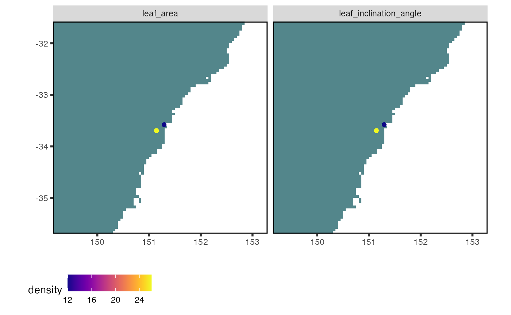
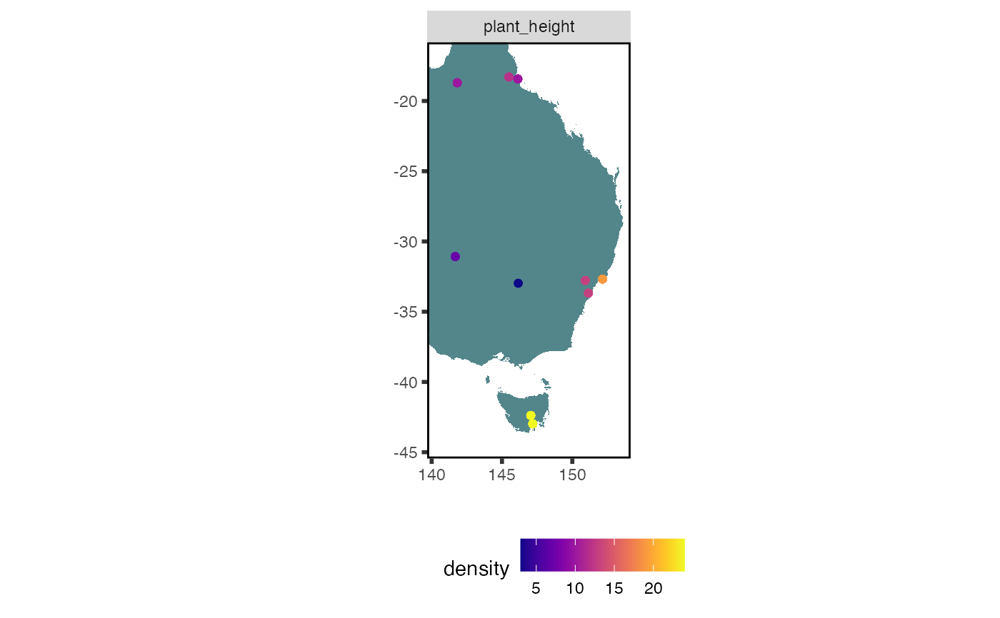

Plot location where trait data was collected from
Arguments
- database
traits.build database OR traits table from a traits.build database. Note location details must be joined. See join_location_coordinates and examples
- feature
grouping/classification categories e.g trait_name, collection_type for <= v3.0.2, basis of record for >3.0.2
- ...
arguments passed to ggpointdensity::geom_pointdensity()
- basemap
The map to draw the locations over:
"world"(the default): a map of the world's land, cropped to the locations being drawn, so that any database gets a map. It is a 0.05 degree grid (about 5 km), rasterised from Natural Earth's 1:10m land (public domain, https://www.naturalearthdata.com/), and shown coarser when the locations span a large area.NULL: no map, just the locations.A data frame of map cells, with numeric columns
x(longitude) andy(latitude), one row per land cell, as used byggplot2::geom_raster(); other columns, and rows missingxory, are ignored. Locations beyond the map (plus half a degree) are left out, with a message saying how many records that affects; if no location lies on the map, it stops with an error. Theaustraitspackage passes its map of Australia here.
Examples
# All traits from a given study
data <- austraits_lite %>%
extract_dataset(dataset_id = "Falster_2003") %>%
join_location_coordinates()
data %>% plot_locations("trait_name")

# Single trait
data <- austraits_lite %>%
extract_trait(trait_names = "plant_height") %>%
join_location_coordinates()
data$traits %>% plot_locations("trait_name")

# Without a map
data$traits %>% plot_locations("trait_name", basemap = NULL)
 # Over your own map: pass `basemap`, a data frame of land cells with columns
# x and y, such as `raster::as.data.frame(r, xy = TRUE, na.rm = TRUE)` of a
# land raster `r`. `austraits::plot_locations()` draws a map of Australia.
# Over your own map: pass `basemap`, a data frame of land cells with columns
# x and y, such as `raster::as.data.frame(r, xy = TRUE, na.rm = TRUE)` of a
# land raster `r`. `austraits::plot_locations()` draws a map of Australia.